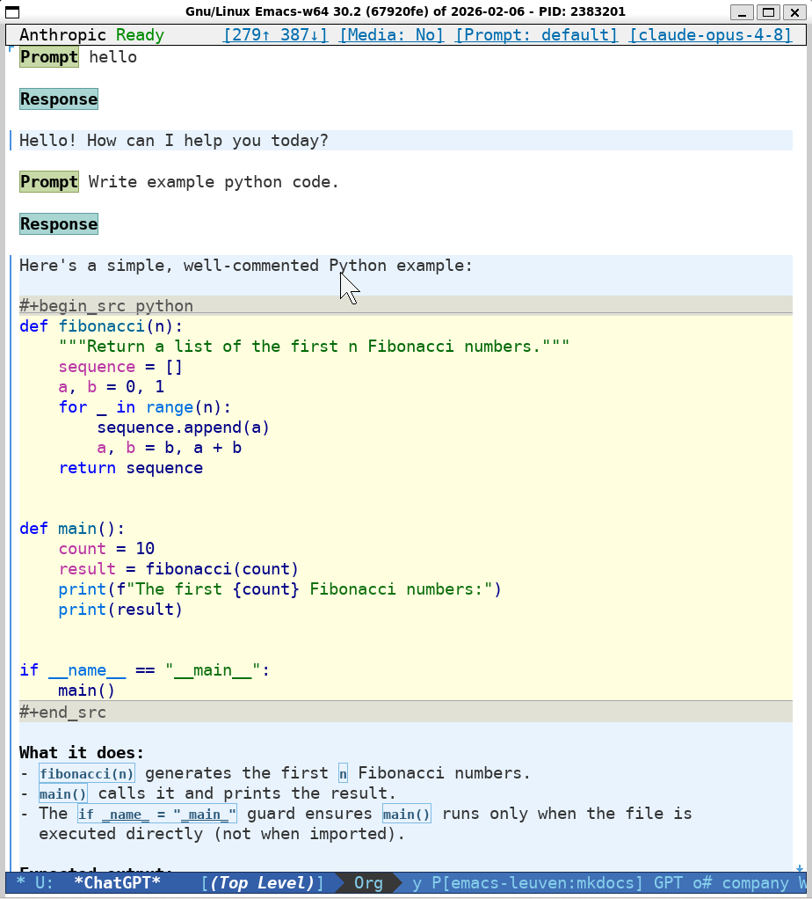

Emacs Chat avec Sacha Chua
Table des matières
- 1. Présentation
- 2. Agenda
- 3. leuven-theme
- 4. Emacs Leuven (EmacsBoost)
- 5. Export vers HTML
- 6. Export vers PDF
- 7. Mon organisation quotidienne
- 8. Quelques astuces
- 8.1. C-w / M-w sans sélectionner de région
- 8.2. VCS (Git)
- 8.3. Mise à jour automatique du contenu avant enregistrement
- 8.4. Édition rectangle
- 8.5. Tri, suppression
- 8.6. Automatisations dans Dired
- 8.7. Automatisations dans Isearch
- 8.8. Autres raccourcis de productivité
- 8.9. GPTel
- 8.10. Intégration avec le Shell
- 8.11. Dotfiler (type Stow) pour tous mes repos
- 9. Formations EmacsBoost
- 10. Merci
1. Présentation
Je suis consultant IT en Belgique (à Leuven ;-)) et utilisateur passionné d’Emacs depuis 1999.
Au fil des années, j’ai développé plusieurs projets open source autour d’Emacs et d’Org mode, principalement pour :
- la personnalisation d’Emacs ;
- l’automatisation des tâches répétitives (DRY) ;
- la rédaction et la publication de documents techniques (vers HTML, LaTeX et PDF) à partir d’une source unique (macros Org) ;
- la diffusion d’Org mode à travers des refcards sur la syntaxe Org mode et sur Org Babel (literate programming, reproducible research).
Aujourd’hui, la plupart de mes outils et expérimentations sont publiés sur GitHub et servent également de support à mes formations EmacsBoost (et ShellBoost… et GitBoost…).
Référence : https://github.com/fniessen
2. Agenda
Quelques sujets que l’on pourrait aborder :
- mon parcours avec Emacs ;
- le thème (officiel) de couleurs Leuven ;
- ma configuration Emacs (« Emacs Leuven ») ;
- org-html-themes ;
- boost-org-latex-toolkit ;
- mon organisation quotidienne ;
- quelques astuces et automatisations ;
- les formations EmacsBoost.
Tous ces projets répondent à des besoins rencontrés dans mon travail quotidien.
3. leuven-theme
Le thème leuven est un thème clair qui privilégie :
- la lisibilité ;
- un contraste suffisant ;
- des couleurs peu fatigantes ;
- une hiérarchie visuelle claire.
Je l’ai conçu pour pouvoir travailler plusieurs heures par jour sans fatigue visuelle.
Référence : https://github.com/fniessen/emacs-leuven-theme
4. Emacs Leuven (EmacsBoost)
Ma configuration emacs-leuven est l’aboutissement de nombreuses années
d’utilisation quotidienne.
L’objectif n’est pas de montrer « la meilleure configuration Emacs », mais une configuration « Emacs pour humains habitués aux IDE modernes » :
- cohérente ;
- documentée ;
- facile à comprendre ;
- composée de plein de petites améliorations qui, mises bout à bout, changent vraiment l’expérience utilisateur – et rendent Emacs tout simplement indispensable.
C’est aussi un excellent support pédagogique pour découvrir de nombreuses fonctionnalités d’Emacs.
Depuis quelque temps, je suis progressivement en train de faire évoluer ce projet sous le nom EmacsBoost. Ce nouveau nom reflète mieux son ambition : proposer non seulement une configuration Emacs prête à l’emploi, mais également un ensemble cohérent de configurations, d’automatisations et d’outils pour aider chacun à tirer le meilleur parti d’Emacs.
Référence : https://github.com/fniessen/emacs-leuven
5. Export vers HTML
org-html-themes est né d’un besoin très concret : produire facilement des
exports HTML Org mode qui soient directement publiables, professionnels et
agréables à lire.
Le projet fournit plusieurs thèmes complets (dont ReadTheOrg et Bigblow) ainsi que toute l’infrastructure nécessaire pour transformer un simple document Org en une documentation moderne.
Objectifs :
- zéro CSS à écrire ;
- une navigation confortable ;
- une excellente lisibilité ;
- un rendu professionnel ;
- une personnalisation simple.
Référence : https://github.com/fniessen/org-html-themes
6. Export vers PDF
7. Mon organisation quotidienne
7.1. TODO Org mode personal
Org mode est le centre de mon organisation.
Je l’utilise pour :
- gérer mes tâches ;
- prendre des notes ;
- préparer mes (supports de) formations ;
- écrire de la documentation ;
- suivre mes projets personnels.
7.2. STRT Suivi du temps passé work
Je mesure précisément le temps consacré à mes activités professionnelles grâce
au système de org-clock-in / org-clock-out.
Cela me permet :
- de retrouver facilement ce que j’ai fait ;
- de produire des factures.
8. Quelques astuces
Quelques petites choses qui font gagner beaucoup de temps.
8.1. C-w / M-w sans sélectionner de région
Couper ou copier la ligne courante lorsqu’aucune région n’est active.
Référence : https://github.com/fniessen/emacs-leuven/blob/master/docs/emacs-leuven.txt#deletion-and-killing
8.2. VCS (Git)
EDiff
| Touche | Commande |
|---|---|
E |
vc-ediff |
Référence : https://github.com/fniessen/emacs-leuven/blob/master/docs/emacs-leuven.txt#vc-directory-mode
Messages de commit
Génération automatique de messages de commit par IA.
Référence : https://github.com/fniessen/emacs-leuven/blob/master/docs/emacs-leuven-ai.txt#git-commit-messages
8.3. Mise à jour automatique du contenu avant enregistrement
La fonction boost--org-update-generated-content-before-save met automatiquement
à jour certaines parties du document juste avant l’enregistrement : elle
recalcule les blocs dynamiques et les tables, et réaligne les tags.
Cela évite les oublis et garantit que
les données dérivées restent synchronisées avec leur source.
Hey user, this is an Org macro…
Lignes de facturation :
| Nom | Société | Prix HT | |
|---|---|---|---|
| Alice Martin | ACME | 500.00 | € |
| Bob Dupont | ACME | 500.00 | € |
| Claire Durand | Contoso | 750.00 | € |
| David Leroy | ACME | 500.00 | € |
| Total | 2250.00 | € |
Montant à facturer :
| Sous-total HT | 2250.00 | € |
|---|---|---|
| TVA @ 21% | 472.50 | € |
| Total TTC | 2722.50 | € |
Référence : https://github.com/fniessen/emacs-leuven/blob/master/docs/emacs-leuven-org.txt#a6-dynamic-blocks
8.4. Édition rectangle
L’édition rectangle est l’une de ces fonctionnalités méconnues d’Emacs qui deviennent rapidement indispensables dès que l’on manipule du texte semi-structuré – elle fait gagner énormément de temps.
Elle permet de sélectionner et de modifier (couper, copier, effacer ou remplacer) une zone rectangulaire de texte.
J’utilise cette fonctionnalité régulièrement pour :
- insérer ou supprimer un préfixe sur plusieurs lignes ;
- transformer rapidement des listes ;
- préparer des données ;
- éditer des blocs de code ou des fichiers de configuration.
Par exemple :
Alice Martin Bruxelles Bob Dupont Namur Claire Durand Liège
8.5. Tri, suppression
sort-linestrie les lignes de la région sélectionnée par ordre alphabétique.keep-linessupprime toutes les lignes de la région (ou du buffer après le point) qui ne correspondent pas à une regexp donnée.flush-linessupprime les lignes qui correspondent à la regexp.boost-delete-duplicate-lines-trimsupprime les espaces en début/fin de ligne avant comparaison, puis supprime les lignes en doublon.
8.6. Automatisations dans Dired
Quelques exemples :
| Touche | Commande |
|---|---|
C-x C-j |
dired-jump (global) |
o |
boost-dired-open-marked-files-externally |
8.7. Automatisations dans Isearch
| Touche | Commande |
|---|---|
C-o |
helm-swoop-from-isearch |
Nombre de correspondances grâce à Anzu.
8.8. Autres raccourcis de productivité
Les touches de fonction ci-dessous offrent un mode de travail inspiré de Borland Pascal pour les opérations les plus courantes : gestion des fichiers, navigation entre fenêtres et buffers, vues d’agenda Org, macros clavier, gestion de versions et navigation dans les erreurs de compilation.
| Touche | Commande |
|---|---|
<f2> |
save-buffer |
<f3> |
find-file / helm-for-files |
<f5> |
boost-toggle-window-split |
<f6> |
boost-previous-buffer-or-next-window |
<f8> |
call-last-kbd-macro |
S-<f8> |
boost-toggle-kmacro-recording |
C-<f8> |
kmacro-name-last-macro |
<f9> |
boost--org-rebuild-dependent-files |
C-<f9> |
boost-vc-status-here |
<f10> |
next-error |
S-<f10> |
previous-error |
C-<f10> |
first-error |
<f11> |
undo-only |
S-<f11> |
undo-redo |
<f12> |
switch-to-buffer / helm-mini |
S-<f12> |
boost-kill-current-buffer |
C-<f12> |
boost-helm-generic-imenu |
M-<f12> |
bury-buffer |
C-c 1 |
find-name-dired |
C-c 2 |
find-grep-dired |
C-c 3 |
rgrep |
M-q |
boost-fill-paragraph-dwim |
M-S-a |
boost-show-hidden-text |
C-c . |
org-timestamp |
Les variantes de F6 permettent notamment d’afficher des vues d’agenda adaptées
au contexte courant, depuis le fichier actif jusqu’à l’ensemble du projet.
| Touche | Commande |
|---|---|
S-<f6> |
boost-org-agenda-current-file |
C-<f6> |
boost-org-agenda-project-org |
M-<f6> |
boost-org-agenda-project-org-and-txt |
M-S-<f6> |
boost-project-unscheduled-todos |
8.9. GPTel
Buffer de conversation

Référence : https://github.com/fniessen/emacs-boost-gptel/blob/master/README.org#14-chat-interface
GPTel-commit-msg
But : Générer des messages de commit Git à partir d’un buffer de diff avec GPTel.
Le buffer de diff, quelle que soit la manière dont le diff a été produit (Magit,
VC, diff-mode, sortie de git diff, etc.), est envoyé au backend GPTel configuré,
qui renvoie un message de commit décrivant les changements.
Le message obtenu est affiché dans un buffer séparé et copié dans le kill-ring.
Référence : https://github.com/fniessen/gptel-commit-msg
8.10. Intégration avec le Shell
Quelques commandes permettent d’établir un pont pratique entre Emacs et le terminal.
epour ouvrir un fichier (ou un répertoire) dans l’instance Emacs en cours à l’aide deemacsclient:alias e='emacsclient -n -a emacs'catepour afficher dans le terminal le contenu du buffer actuellement actif dans Emacs.cdepour se placer dans le répertoire du fichier actuellement ouvert dans Emacs.
Référence : https://github.com/fniessen/emacs-leuven/blob/master/docs/emacs-leuven.txt#shell-utilities
8.11. Dotfiler (type Stow) pour tous mes repos
But : gérer mes fichiers Org dans deux dépôts Git distincts (perso vs pro, ou public vs privé), tout en y accédant depuis un seul répertoire logique unifié sur la machine, via des symlinks.
Les deux repos sont clonés séparément (ex. ~/.dotfiles/org-perso et
~/.dotfiles/org-pro), et le dotfiler crée des liens symboliques vers un
répertoire unique, ex. ~/org.
Avantage : Un seul point d’entrée pour Emacs / Org-agenda; pas besoin de multiplier les chemins dans la config.
Schéma simplifié :
[org-perso repo] ───┐
├──symlinks──> [~/org/] <──── [Emacs/Org-agenda]
[org-pro repo] ────┘
- Les fichiers réels vivent dans le répertoire
./orgde repos séparés ~/orgne contient QUE des liens symboliques (symlinks)- Dotfiler crée/gère automatiquement ces liens
- Emacs voit un seul dossier
~/org→ simplicité de configuration - Chaque repo Git reste indépendant (historique, remote, accès séparés)
Le même principe s’applique pour bin/ et lisp/ : le vrai intérêt apparaît quand
on généralise ce mécanisme à tous les répertoires « fonctionnels » des repos, pas
seulement org/.
Chaque repo peut avoir sa propre structure interne :
~/.dotfiles/repo-A/ ├── org/ (fichiers Org) ├── bin/ (scripts perso) └── lisp/ (paquets Elisp) ~/.dotfiles/repo-B/ ├── org/ ├── bin/ └── lisp/
Dotfiler agrège alors chaque sous-dossier de chaque repo vers un répertoire unifié correspondant :
repo-A/org/ ─┐ repo-B/org/ ─┴──symlinks──> ~/org/ <── Org-agenda repo-A/bin/ ─┐ repo-B/bin/ ─┴──symlinks──> ~/bin/ <── $PATH repo-A/lisp/ ─┐ repo-B/lisp/ ─┴──symlinks──> ~/lisp/ <── load-path Emacs
9. Formations EmacsBoost
L’objectif de mes formations est simple : transmettre toutes les fonctionnalités d’Emacs que j’utilise au quotidien, et qui me font réellement gagner du temps.
Les formations mettent l’accent sur :
- les raccourcis utiles ;
- Org mode ;
- la gestion des projets ;
- les automatisations ;
- la personnalisation ;
- les bonnes pratiques.
L’objectif est que les participants puissent appliquer immédiatement ce qu’ils ont appris dès leur retour au travail.
Prochaine date à Paris : mars 2027.
Référence : https://emacsboost.com
9.1. Témoignages
Quelques retours récurrents des participants :
- « J’ai découvert énormément de fonctionnalités que je n’aurais jamais trouvées seul. »
- « Le gain de productivité est immédiat. »
- « La formation est très concrète. »
- « Même après 20 ans d’utilisation quotidienne d’Emacs, j’ai appris énormément. »
10. Merci
Merci pour ton intérêt !
J’espère que cette conversation aura été une bonne occasion d’échanger quelques idées, expériences et astuces autour d’Emacs, d’Org mode et de l’open source.